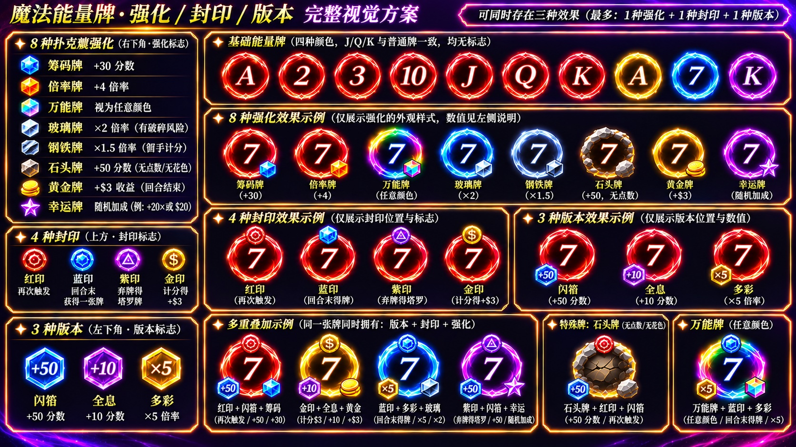
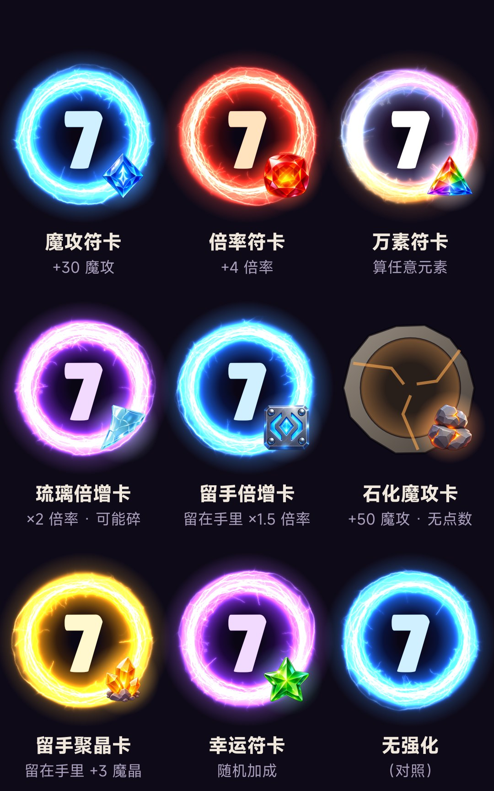
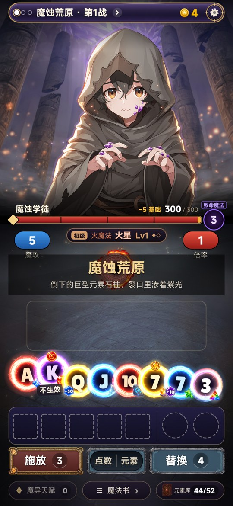
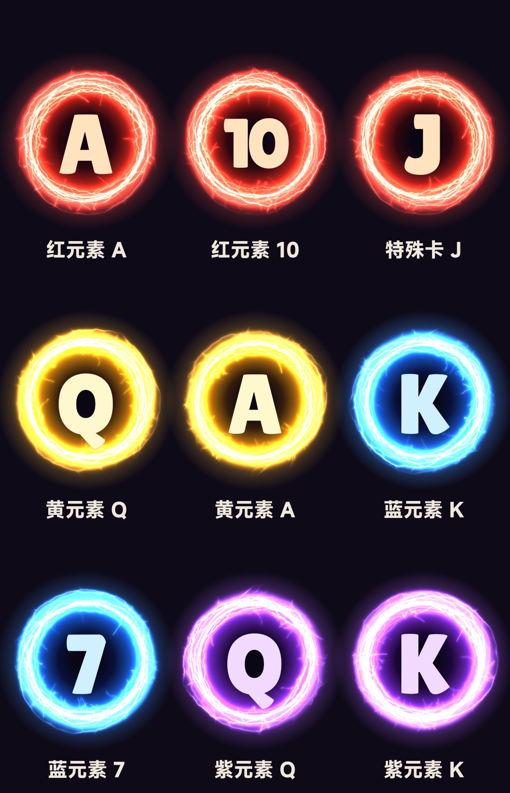
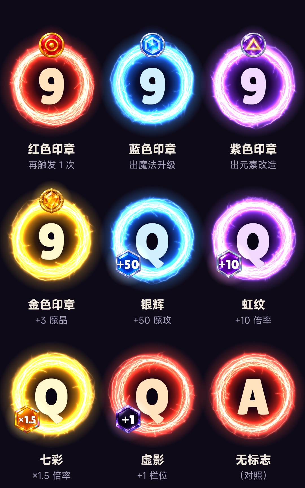
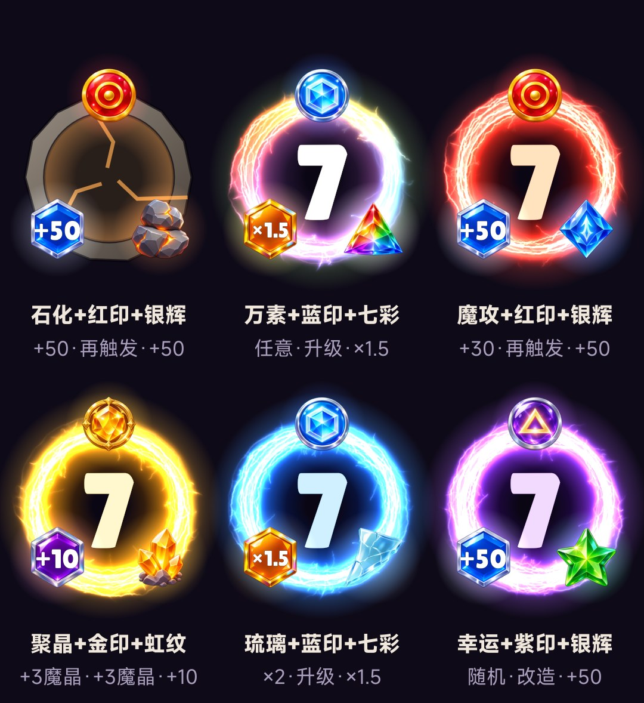
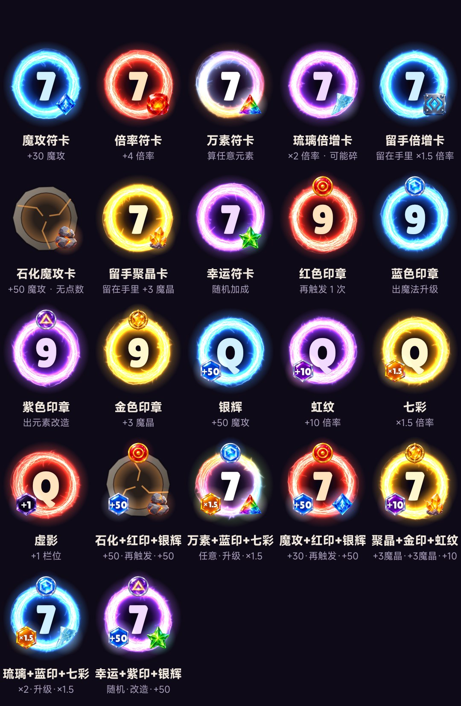
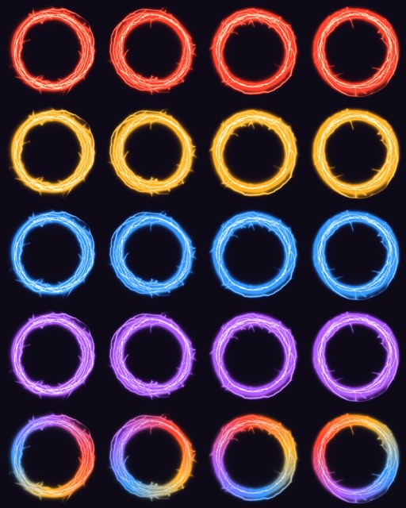
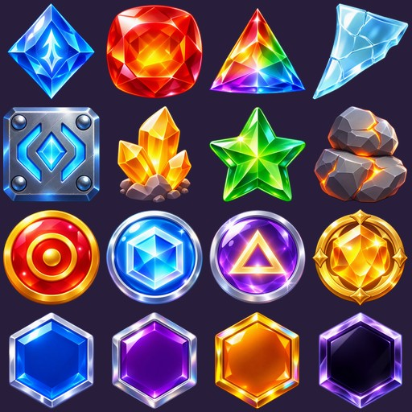
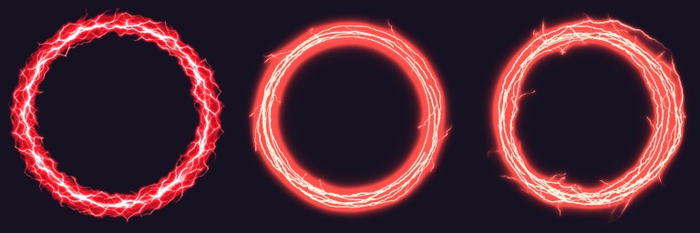

手搓魔法 · 元素能量球 第四轮方案（仅方案，未进正式版）
按参考图重做：能量环改成贴着球的高亮电浆环（锯齿电丝 + 白热内沿 + 强辉光 + 暗色球心），电丝一直在闪烁、爬动；选中的牌电流更猛；计分时整环放电炸开。强化 / 印章 / 特效改成立体宝石徽章，比之前大很多。球 0.84 卡宽，编号居中加大，去掉左上角元素符号。所有画面都是用游戏自己的渲染器离线渲染的手机竖屏（1080×2340），就是进游戏后的样子。
(h) 参考图 与 本方案 并排
参考图

本方案（8 种强化，游戏渲染）

(f) 实际局内：手牌 8 张，选中 2 张（A、K），手机尺寸

手牌区域 1:1

A、K 是选中的牌（抬起、电流更快更亮、外面多一圈电花）。徽章在手牌叠放时自动滑到不被下一张遮住的位置；编号 8 张以内始终居中。
(g) 动效短视频（≤4 秒循环，540 宽）
电丝闪烁 · 特写（2 倍大小）
电丝闪烁 · 手牌（A、K 选中）
整屏视频(a) 基础：四色元素能量 + 特殊卡（J/Q/K）
没有任何强化时，J/Q/K 与普通牌一样，只看颜色和编号。

(b) 8 种强化（右下角徽章，压在环上）
除了万素（彩虹环）和石化（岩石壳、无点数），强化都不改变能量本身的颜色。最后一张是没有强化的对照。
| 强化 | 徽章 | 效果 |
|---|---|---|
| 魔攻符卡 | 蓝水晶 + 魔攻符文 | +30 魔攻 |
| 倍率符卡 | 红橙火晶 | +4 倍率 |
| 万素符卡 | 彩虹棱镜（环也变成彩虹） | 算任意元素 |
| 琉璃倍增卡 | 带裂纹的透明琉璃碎片 | ×2 倍率，可能碎 |
| 留手倍增卡 | 钢铁符文板 | 留在手里 ×1.5 倍率 |
| 石化魔攻卡 | 岩块（球变成岩石壳） | +50 魔攻，无点数 |
| 留手聚晶卡 | 魔晶簇 | 留在手里 +3 魔晶 |
| 幸运符卡 | 翡翠星 | 随机加成 |
(c)(d) 4 种印章（顶部） · 4 种特效（左下角六边形 + 数值）

(e) 叠加示例（强化 + 印章 + 特效 同时存在）
含 石化 + 红印 + 银辉、万素 + 蓝印 + 七彩。三个位置互不遮挡：印章在上，特效在左下，强化在右下。

全部标志 · 手牌大小

素材与做法
能量环（程序生成，4 色 + 万素彩虹，每色 4 帧，256 px，合成一张图集）

游戏里每张牌叠 3 层（选中 4 层，计分时再加 4 层向外飞）：两帧交叉淡入淡出并跳到新角度（闪烁），一层反向慢转（爬动），全部叠加发光。
徽章（AI 生成，透明底，128 px，合成一张图集）

能量环做法对比

左：AI 生成（gpt-image-2）的电环；中：程序生成第一版；右：程序生成最终版（采用）。AI 版电丝很好，但只有一帧、圆心和粗细每张都不一样，透明底也带不出外面的辉光，没法做成对齐的多帧动画；程序版每帧完全同心，可以无缝换帧和旋转，辉光也是烘进去的。所以选程序版，并把电丝加密、加锯齿，往 AI 版的效果靠。
性能 · 显存
| 第一版（加电，参考） | 本方案（贴图电环 + 徽章） | |
|---|---|---|
| 局内每帧 Lua 绘制（8 张手牌，两轮交替测平均） | 3.47 ms（3.55 / 3.38） | 3.38 ms（3.33 / 3.42） |
| 局内 + 元素库弹窗 | 5.10 ms | 4.91 ms |
| 每帧内存分配（局内） | 约 21 KB | 22.6 KB（持平） |
| 新增贴图显存 | — | 能量环图集 1024×1280 = 5.0 MB；徽章图集 512×512 = 1.0 MB；共约 6 MB（安装包增加约 1.4 MB PNG） |
同一台机器、同一段浸泡测试（cards 模式：一手打扮好的手牌站着 + 元素库弹窗），两版交替各跑两次。今天机器整体比上次测时慢一些，所以绝对值比上轮报告的 2.79 ms 高，但同条件下本方案不比第一版慢：每张牌从十几条渐变描边换成了 3 张贴图。空闲降帧（30 fps）比例 84% 不变。